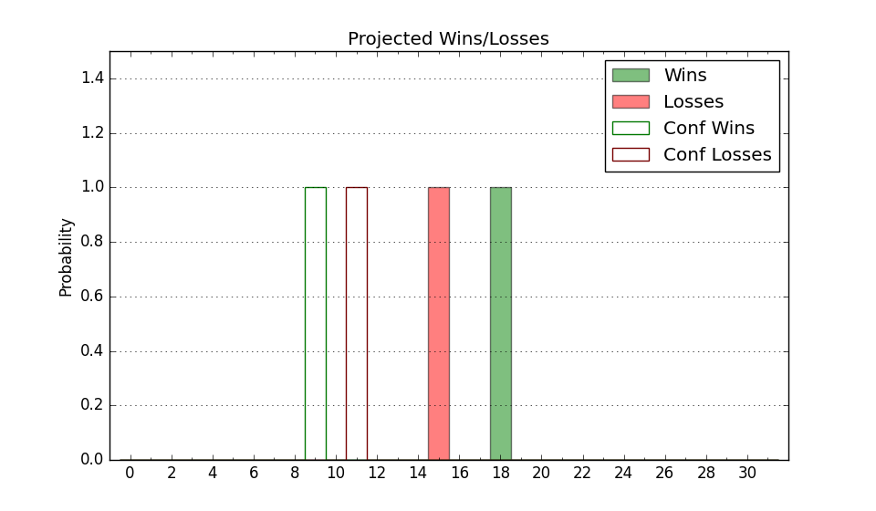

| Home | Game Probabilities | Conferences | Preseason Predictions | Odds Charts | NCAA Tournament |
| City: | Washington, D.C. | |
| Conference: | Atlantic 10 (7th)
| |
| Record: | 8-9 (Conf) 12-17 (Overall) | |
| Ratings: | Comp.: -5.3 (232nd) Net: -5.3 (232nd) Off: 98.0 (256th) Def: 103.3 (182nd) SoR: 0.0 (153rd) |
| Remaining | ||||||
|---|---|---|---|---|---|---|
| Date | Opponent | Win Prob | Pred. | |||
| 3/10 | (N) Massachusetts (186) | 40.1% | L 77-80 | |||
| Previous | Game Score | |||||
| Date | Opponent | Win Prob | Result | Off | Def | Net |
| 11/9 | St. Francis PA (326) | 85.0% | W 75-72 | -10.4 | -3.0 | -13.4 |
| 11/11 | @Maryland (84) | 10.0% | L 64-71 | -2.6 | 15.5 | 12.9 |
| 11/13 | @UC San Diego (270) | 45.1% | L 55-75 | -28.1 | 1.5 | -26.5 |
| 11/16 | @Cal St. Fullerton (174) | 25.4% | L 59-74 | -8.5 | -7.1 | -15.6 |
| 11/19 | UMass Lowell (254) | 70.3% | L 56-67 | -25.7 | 1.7 | -24.0 |
| 11/22 | (N) Wright St. (206) | 45.0% | W 74-63 | 7.1 | 14.7 | 21.8 |
| 11/23 | (N) Kent St. (135) | 31.0% | L 69-77 | 15.5 | -20.1 | -4.6 |
| 11/24 | (N) Missouri St. (66) | 14.5% | L 54-72 | -17.6 | 8.8 | -8.8 |
| 12/1 | Boston University (210) | 60.9% | L 54-56 | -20.9 | 11.5 | -9.4 |
| 12/4 | @Charlotte (181) | 26.1% | L 79-86 | 6.7 | -9.1 | -2.3 |
| 12/8 | Coppin St. (295) | 77.8% | W 75-62 | 5.9 | 1.9 | 7.7 |
| 12/13 | Radford (283) | 76.7% | W 67-58 | -4.0 | 6.5 | 2.6 |
| 1/8 | Dayton (51) | 19.9% | L 58-83 | -10.0 | -11.0 | -21.0 |
| 1/11 | @VCU (57) | 7.4% | L 57-84 | 1.1 | -14.2 | -13.1 |
| 1/17 | George Mason (107) | 35.8% | W 77-76 | 16.4 | -8.3 | 8.1 |
| 1/19 | @Saint Joseph's (162) | 23.7% | L 61-72 | -2.5 | 0.8 | -1.7 |
| 1/22 | @Rhode Island (127) | 18.4% | W 63-61 | 5.8 | 11.6 | 17.4 |
| 1/26 | @Saint Louis (60) | 7.6% | L 67-80 | 9.4 | -3.6 | 5.8 |
| 1/30 | Fordham (179) | 54.6% | W 64-55 | -0.5 | 8.4 | 7.9 |
| 2/2 | La Salle (233) | 65.7% | W 89-87 | 24.5 | -29.1 | -4.6 |
| 2/5 | Davidson (52) | 19.9% | L 73-78 | 15.5 | -9.6 | 5.9 |
| 2/9 | @Massachusetts (186) | 26.6% | W 77-68 | 5.2 | 15.6 | 20.8 |
| 2/12 | @Dayton (51) | 6.8% | L 54-80 | -5.7 | -7.1 | -12.8 |
| 2/16 | @Duquesne (275) | 46.7% | W 73-52 | 1.6 | 26.7 | 28.3 |
| 2/19 | Rhode Island (127) | 43.4% | W 72-61 | 9.3 | 9.7 | 19.0 |
| 2/22 | Richmond (92) | 30.1% | L 71-84 | 9.8 | -17.7 | -7.9 |
| 2/27 | @George Mason (107) | 14.1% | L 62-69 | 0.4 | 3.7 | 4.1 |
| 3/2 | Duquesne (275) | 74.9% | W 98-93 | -1.2 | -1.5 | -2.7 |
| 3/5 | @Fordham (179) | 26.1% | L 66-70 | 7.7 | -4.7 | 3.0 |
| Stats & Trends | |||||
|---|---|---|---|---|---|
| Current | Day | Week | Month | Season | |
| Composite | -5.3 | +0.0 | +0.1 | +3.3 | +1.6 |
| Comp Rank | 232 | -- | -1 | +33 | +42 |
| Net Efficiency | -5.3 | +0.0 | +0.1 | +3.4 | -- |
| Net Rank | 232 | -- | -1 | +35 | -- |
| Off Efficiency | 98.0 | +0.0 | +0.3 | +1.9 | -- |
| Off Rank | 256 | +1 | +11 | +28 | -- |
| Def Efficiency | 103.3 | +0.0 | -0.1 | +1.5 | -- |
| Def Rank | 182 | -- | -3 | +43 | -- |
| SoS Rank | 131 | -- | -14 | +37 | -- |
| Exp. Wins | 12.0 | -- | +0.0 | +1.8 | +2.6 |
| Exp. Conf Wins | 8.0 | -- | +0.0 | +1.8 | +3.7 |
| Conf Champ Prob | 0.0 | -- | -- | -- | -0.0 |

| Advanced Stats | ||
|---|---|---|
| Stat | Value | Rank |
| Off Eff FG % | 0.491 | 213 |
| Off Ast Ratio | 0.137 | 185 |
| Off ORB% | 0.234 | 310 |
| Off TO Rate | 0.159 | 146 |
| Off FT Ratio | 0.276 | 263 |
| Def Eff FG % | 0.488 | 125 |
| Def Ast Ratio | 0.141 | 192 |
| Def ORB% | 0.316 | 309 |
| Def TO Rate | 0.158 | 203 |
| Def FT Ratio | 0.287 | 145 |